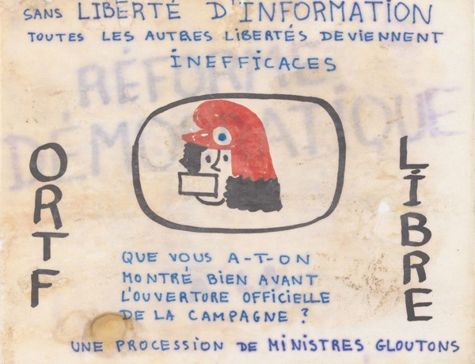
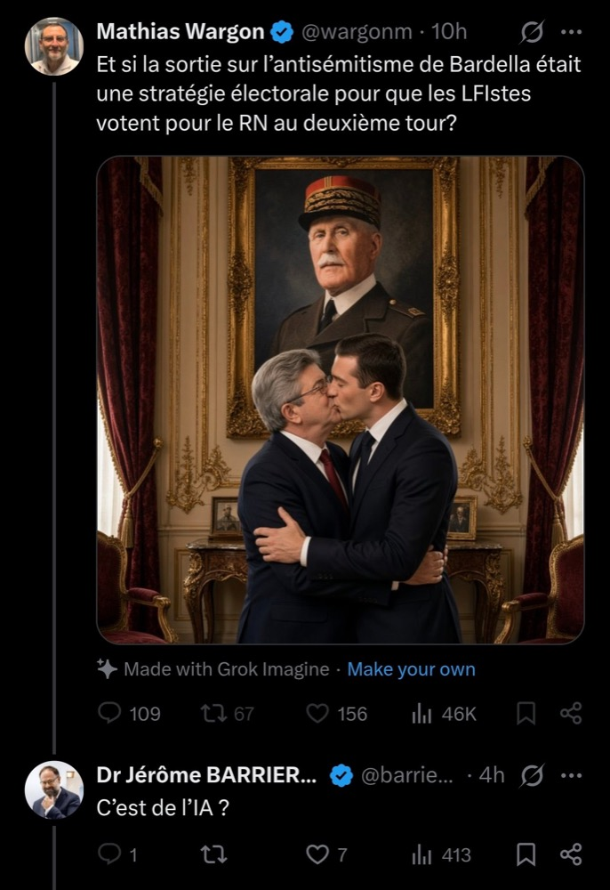

|
P
our bien parler des médias, je pense qu'il faut faire un petit état des lieux des différents médias qu'on a en France et aussi dans le monde. Alexis de Tocqueville présentait le rôle de la presse en démocratie en trois points : critiquer le pouvoir, éduquer les foules, créer du lien social. Bon, si on regarde le paysage médiatique français aujourd'hui, on se demande si on arrive encore à trouver un grand média qui respecte ces trois points. Même à l'étranger, imaginons que je veuille avoir des infos sur Gaza : l'un des médias qui en parle le plus va être Al Jazeera, une chaîne d'information qatarie. On comprend tout de suite le problème de baser son information sur une chaîne dont le pays hôte n'est pas vraiment un exemple de respect des libertés fondamentales. Mais on est obligé de se tourner en partie vers ces organes de presse à cause de plusieurs symptômes.
Le premier symptôme, c'est le mensonge devenu éditorial : l'acharnement médiatique sur Rima Hassan, l'absence de contradiction quand un ministre répand une fake news sur les pesticides, le non-respect des lois encadrant la liberté d'expression en France. L'ère des faits et du respect de l'intellectualisme est mort, on préfère inviter des toutologues qui vont passer leur journée à critiquer l'actualité en se faisant passer pour des experts, comme Michel le ferait au bar-PMU du village. Cette absence des experts, des technocrates, des scientifiques transforme chaque sujet en un sujet d'opinion, or une grande majorité de l'actualité n'est pas de l'opinion mais des faits : si je veux lire de l'opinion, je lis Closer. On y est en plein, c'est exactement ce que critiquait déjà Simone Weil dans L'Enracinement, où elle dénonçait les crimes de la presse : le fait d'avoir un angle de vue, une vision certaine de la réalité, de biaiser les faits et de mentir au peuple. Pour elle, la presse devrait être soumise à une obligation de vérité, comme n'importe quelle autre institution publique.
Et quand cette obligation n'existe pas, l'éditorialisme à l'excès a un effet bien précis sur le débat public : il pousse sans cesse la fenêtre d'Overton, cette idée que l'éventail des positions politiques jugées acceptables se déplace progressivement, souvent sous l'effet de prises de parole volontairement extrêmes qui finissent par faire paraître modéré ce qui choquait la veille. On en a de bons exemples en France, JMLP l'avait très bien compris, c'est d'ailleurs pour ça que la presse a arrêté de l'inviter, et qu'en Belgique on a encore un cordon sanitaire contre l'extrême droite dans la presse. À gauche, je pense que le meilleur exemple c'est Sandrine Rousseau qui, par ses prises de parole sur le patriarcat, le féminisme et l'écologie, a ramené un grand nombre de positions acceptables et a restabilisé la fenêtre. Aujourd'hui on voit qu'à droite, Retailleau tente de faire la même chose, mais contrairement à un JMLP, lui a un temps d'antenne énormissime. On se retrouve donc avec des sorties médiatiques marquantes pour déplacer ce qui est dicible, et que les médias relaient en boucle.

Ca, c'est du sujet, heureusement que ce genre de média existe
|
Comment peut-on garantir une forme de sincérité dans la presse, alors, et empêcher que des discours de haine ou autoritaires deviennent dicibles ? On a bien essayé d'y répondre par la régulation, d'abord avec le CSA, puis avec l'Arcom qui lui a succédé en 2022, censée veiller à ce que les chaînes respectent un minimum de pluralisme et d'honnêteté de l'information. Ce qui ne veut pas dire que l'Arcom n'a aucun pouvoir : en 2025, elle a par exemple refusé de renouveler la fréquence de C8, la chaîne de Cyril Hanouna, sanctionnant des années de dérapages répétés. Mais c'est resté un cas isolé face à l'ampleur du problème, et l'exemple de CNews montre bien les limites de l'exercice : la chaîne accumule les mises en demeure pour manquement au pluralisme, et pourtant rien ne change vraiment, parce que Vincent Bolloré, qui la contrôle via Canal+, menace régulièrement de représailles si on s'en prend trop à CNews, jusqu'à évoquer un retrait de son soutien financier au cinéma français si la chaîne venait à être sanctionnée trop durement. Le régulateur existe sur le papier, mais le rapport de force économique le rend largement impuissant. On peut bien sûr réussir à créer un régulateur puissant, mais pour ça il faut un peu de volonté politique : une loi de non-concentration des médias pourrait être un bon début.
Cette confusion entre presse et pouvoir n'a d'ailleurs rien de nouveau. La presse dans nos sociétés s'est très vite confrontée aux influences du pouvoir exécutif : on pense évidemment à la catastrophe démocratique qu'a été l'ORTF. Par ailleurs, les traces du contrôle gouvernemental des médias se voient encore aujourd'hui dans le nom même des radios qu'on écoute. Radio Monte-Carlo (RMC), Radio-Télé Luxembourg (RTL), Europe 1 : vous vous êtes jamais demandé pourquoi les radios les plus écoutées de France faisaient référence à des territoires extérieurs à la France ? Tout simplement parce qu'elles n'avaient pas le droit d'émettre en France, donc quand on voulait ouvrir une grande radio, on allait dans les lieux les plus proches de la frontière française, à Monaco, au Luxembourg, en Belgique, et on émettait depuis là-bas. Il a fallu attendre 1981 et la libéralisation des ondes par Mitterrand pour que ce monopole d'État sur l'information commence vraiment à se desserrer. Mais ce monopole n'a pas disparu pour autant, il a juste changé de mains : de l'État, il est passé à l'argent.
|

« Sans liberté d'information, toutes les autres libertés deviennent inefficaces »
|
Ce contrôle par l'argent, on peut facilement le voir se dessiner aujourd'hui en France : Bernard Arnault, premier actionnaire des Échos et du Parisien ; Xavier Niel, actionnaire principal du Monde ; Patrick Drahi, propriétaire de Libération et de BFM TV ; la famille Dassault, qui possède Le Figaro depuis des décennies. Les élites financières ont très vite compris que pour contrôler l'opinion publique, il faut contrôler la presse. On raconte souvent, au LA Times, qu'on pourrait ouvrir n'importe quel jour un Washington Post ou un New York Times et tomber sur la même couverture, les mêmes gros titres, sans que personne ne se soit pourtant concerté. Les lignes éditoriales sont biaisées sans même avoir besoin de se parler. C'est précisément ce que Bourdieu décrit comme l'homogénéité des médias : le fait que les médias nous imposent des lunettes, une grille de lecture, et empêchent la réflexion du citoyen. À décharge, la concentration ne veut pas dire mainmise totale : des rédactions comme celle du Monde ont leur propre société des journalistes, capable en théorie de peser sur le choix d'un directeur de la rédaction ou de s'opposer à une revente. Mais ce genre de contre-pouvoir interne reste rare, et n'existe nulle part à BFM ou à CNews.
Face à tout ça, on aurait pu croire qu'internet allait redevenir le contre-pouvoir que la presse était censée jouer. C'est vrai qu'il y a du vrai là-dedans, prenons la question du réchauffement climatique : le GIEC peut diffuser ses rapports, accessibles à tous en quelques clics, sans plus dépendre de la presse pour qu'on en parle. Il peut désormais imposer ses informations directement dans le débat public. Internet a aussi permis une chose : la multiplication des cellules de vérification, les Décodeurs du Monde, CheckNews de Libération, AFP Factuel, qui font un travail de fond que la presse ne faisait pas vraiment avant. Mais là où on trouve le meilleur de l'humanité, on trouve aussi le pire : on a vu apparaître les fake news de masse et la prolifération des discours de haine. Résultat, malheureusement, internet n'a pas réussi à cocher les trois points de Tocqueville non plus.
|

Bravo internet merci pour tout
|
Bon du coup, on s'informe plus, qu'est-ce qu'on fait ? Revenons aux trois points de Tocqueville : critiquer le pouvoir, éduquer les foules, créer du lien social. Aucun média, aucune plateforme ne les coche tous les trois aujourd'hui, alors la charge retombe en partie sur le citoyen lui-même. Il doit faire le travail originel du journaliste, aller vérifier par lui-même plutôt que de se fier à une seule source. Alors bien sûr, comme l'explique Bourdieu avec son introduction du capital culturel, ce n'est pas donné à tout le monde, et c'est bien le problème : on demande au citoyen le plus démuni en outils critiques de faire le tri dans un système pensé pour le confondre. Il faut donc encourager le travail de réflexion et le travail de comparaison des sources, par exemple comparer comment un média français et un média étranger traitent l'information, mais aussi soutenir financièrement les rédactions qui essaient de s'extraire de cette logique de concentration, les Mediapart, Disclose ou Blast de ce monde. Ce n'est pas une solution miracle, juste une manière de ne plus laisser à d'autres le soin de décider ce qu'on a le droit de penser.
|